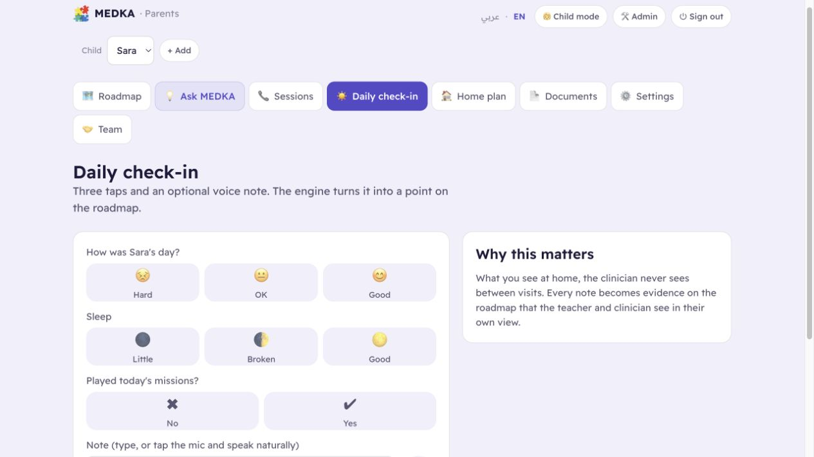
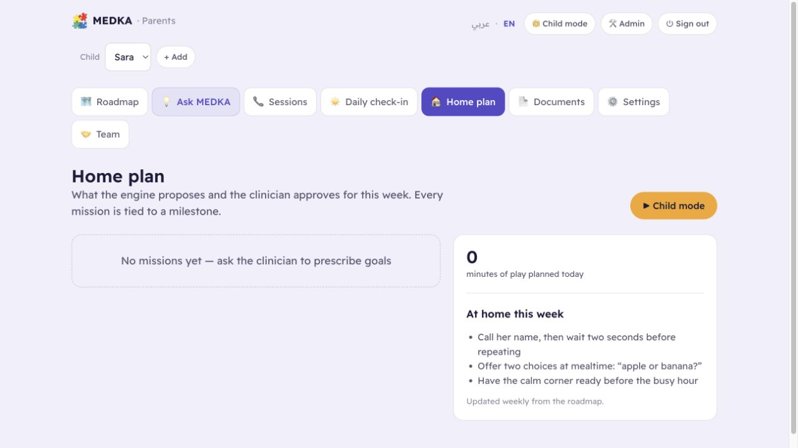
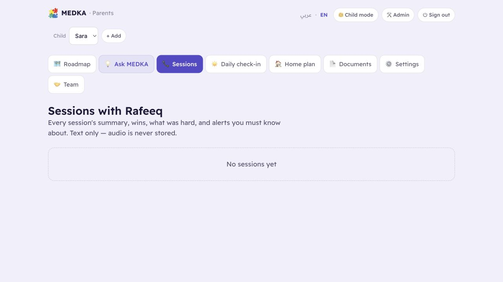
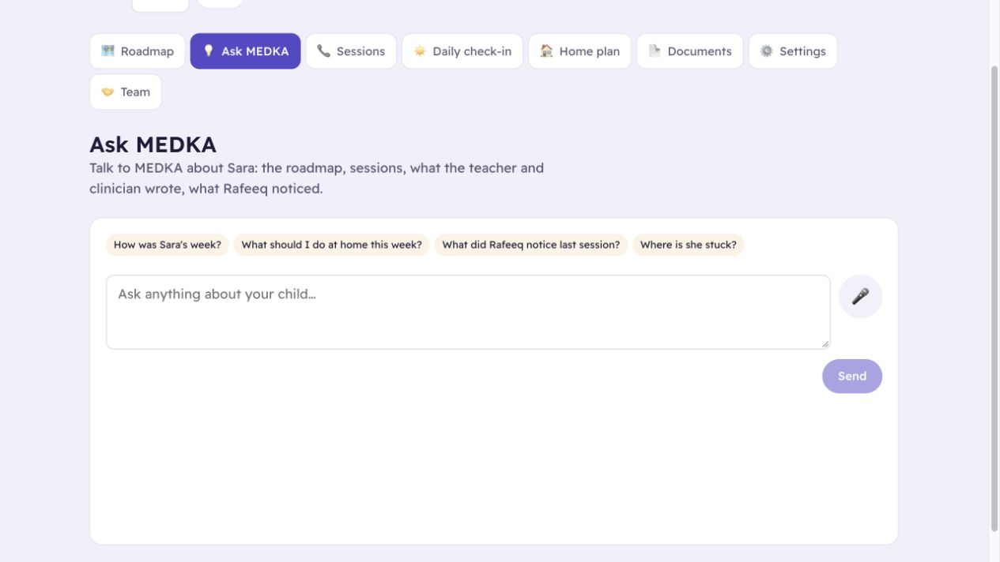

Inside the parent dashboard
Parents can record everyday observations, see what their child is practising, and read summaries of play. These screenshots come from the public demo account.
Daily check-in
The check-in asks how the day went, how the child slept, and whether they tried the day’s activities. A parent can include a typed note or a short voice note in the live app.
Those entries give the care team context between visits and can become evidence on the roadmap.


A short check-in records what happened at home.
Home plan
The plan lists activities for the week and connects each activity to a developmental milestone. Medka’s workflow lets the engine suggest activities for the clinician to review.
The parent view also shows time planned for play and suggestions for practising during ordinary routines.


The care team can link home activities to goals on the roadmap.
Session summaries
After an activity, Medka describes a recap of mood, things that went well, and anything that was difficult. The Sessions view keeps those summaries and relevant alerts together.
The parent site also describes access to a written transcript when available. The pictured demo has no sessions in its history.


The Sessions screen is where activity summaries and alerts appear.
Ask MEDKA
Ask MEDKA is the parent’s question area. Its suggested prompts cover how the week went, what to practise at home, what Rafeeq observed, and where progress may have stalled.
Medka describes using the child’s roadmap, activity history, and notes from the team as context for a response.


Suggested questions give caregivers a starting point for reviewing their child’s week.
Reports and documents
The Documents screen lets the adult enter the title and text of a school note, clinic report, or general note. Medka describes extracting relevant information for the roadmap and Rafeeq’s activities.
Teachers and clinicians can use this context when discussing suggestions and progress with the family.

The live demo shows options to classify and add a report or note.
Team invitations and access
Parents invite teachers and clinicians to the child’s roadmap and manage access. The Team screen also shows a consent option for retaining short play clips as evidence.
Read about access and family controls
Families use Team to manage invitations and control whether short clips can be kept.
Rafeeq preferences and rewards
In Settings, parents can give Rafeeq instructions, specify topics to avoid, and adjust the length of a session. Medka also describes family rewards tied to stars earned for effort.
Families can add context such as words to practise, interests, and what helps the child settle.

The preferences panel lets caregivers give Rafeeq instructions about how to talk and adapt.